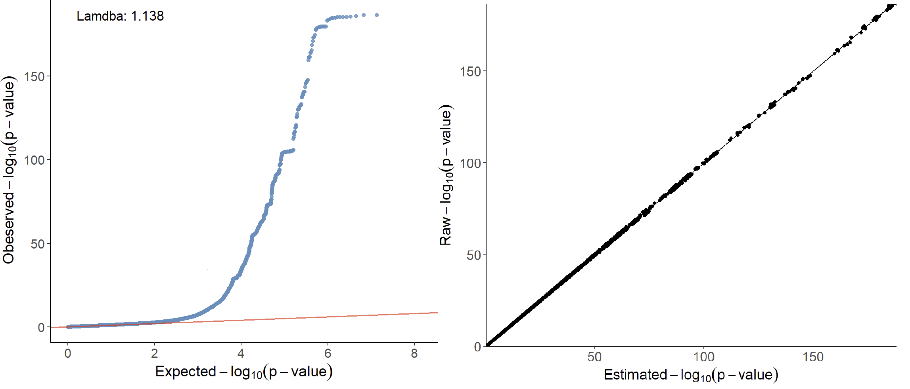
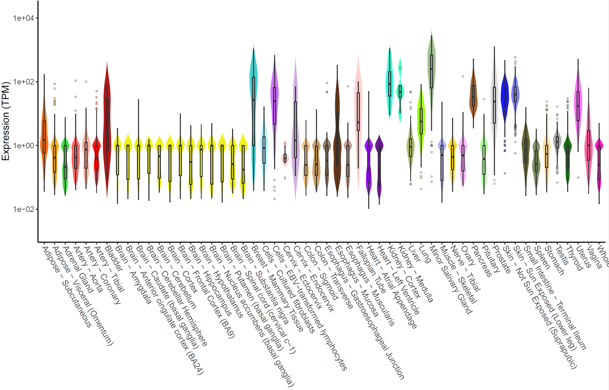
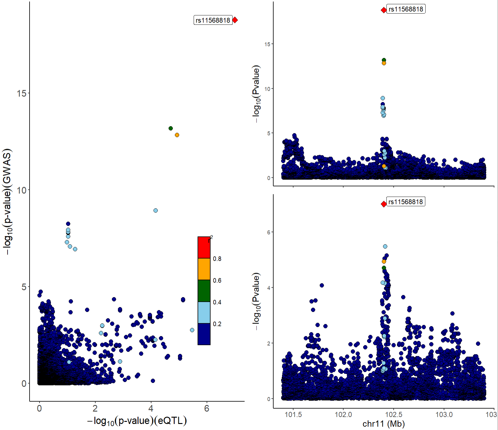

3. Case study: colocalization analysis in prostate cancer
2023-05-01
Source:vignettes/Colocalization_analysis_with_xQTLbiolinks.Rmd
Colocalization_analysis_with_xQTLbiolinks.RmdNOTE! The GTEx Portal API update has caused some functions of xQTLbioliks to malfunction. The package will be updated within one week to address this issue.
Before we start.
All we need to prepare include three parts:
- GWAS summary statistics dataset.
- Tissue of interest.
- Following three installed packages.
library(xQTLbiolinks)
library(coloc)
library(hyprcoloc)
library(data.table)
library(stringr)
library(R.utils)
library(TxDb.Hsapiens.UCSC.hg38.knownGene)
library(VariantAnnotation)Prostate cancer is one of the most common cancers in men. Prostate cancer pathogenesis involves both heritable and environmental factors. The molecular events involved in the development or progression of prostate cancer are still unclear. In this example, we aim to figure out the causal variants and genes assocaited with prostate cancer, and to uncover potential molecular mechanisms of regulation.
For data preparation, we download summary statistics dataset of a
GWAS study (GCST006085)
of prostate cancer from GWAS category and load the dataset in R with
data.table package. Correspondingly, we chose tissue
Prostate for study. We retain the variants with dbSNP id
(start with rs), and a data.table object named
gwasDF of 13,498,990 (rows) x 7 (cols) is loaded.
gwasDF <- fread("29892016-GCST006085-EFO_0001663-build37.f.tsv.gz")
# extract columns.
gwasDF<- gwasDF[str_detect(variant_id, "^rs"),.(rsid=variant_id, chrom=chromosome, position= base_pair_location, pValue=p_value, AF=effect_allele_frequency, beta, se= standard_error)]
# tissue:
tissueSiteDetail="Prostate"
head(gwasDF)#> rsid chrom position pValue AF beta se
#> 1: rs145072688 1 10352 0.46280 0.5753 -0.0094 0.0128
#> 2: rs376342519 1 10616 0.41070 0.0066 0.0572 0.0696
#> 3: rs201725126 1 13116 0.84470 0.8255 -0.0035 0.0178
#> 4: rs200579949 1 13118 0.84470 0.8255 -0.0035 0.0178
#> 5: rs75454623 1 14930 0.61880 0.4772 -0.0065 0.0131
#> 6: rs199856693 1 14933 0.02721 0.0407 -0.0794 0.0360Now we can perform quality control for this GWAS dataset by estimating the genomic inflation factor, validating QQ-plot and PZ-plot using xQTLbiolinks.
xQTLvisual_qqPlot(gwasDF[,.(pValue)])
xQTLvisual_PZPlot(gwasDF[,.(pValue, beta, se)])
Left is the QQ-plot. The x-axis of the QQ-plot represents the expected p-values under the null hypothesis, while the y-axis represents the observed p-values from the GWAS summary statistics data. There is a significant deviation from the diagonal line, which indicates potential variations from the null hypothesis that may result from true associations or LD. The genomic inflation factor (lambda) is labeled in the top left of the QQ-plot, and a lambda value of 1.138 indicating no strong population stratification. Right is the PZ plot, the observed p-values on the y-axis and the corresponding p-values derived from z-scores that estimated by beta and se on the x-axis. A strong concordance can be observed between the observed p-values and those calculated from Z-scores.
Genomic annotation of the significant signals can be conducted using
xQTLanno_genomic:
Step 1: Identify sentinel SNPs:
Sentinel SNP is the most prominent signal within a given genome
range, and is usually in high LD with causal variants. By default,
xQTLbiolinks detect sentinel snps that with the p-value < 5e-8 and
SNP-to-SNP distance > 10e6 bp. Note: For in this
example, due to the inconsistent genome version between the GWAS dataset
(GRCh37) and eQTL associations (GRCh38) from eQTL category, conversion
of genome version is required, and can be conducted using
xQTLanalyze_getSentinelSnp with
genomeVersion="grch37" and grch37To38=TRUE
(package rtracklayeris required):
sentinelSnpDF <- xQTLanalyze_getSentinelSnp(gwasDF, centerRange=1e6,
genomeVersion="grch37", grch37To38=TRUE)A total of 94 sentinel SNPs are detected.
head(sentinelSnpDF)#> rsid chr position pValue maf beta se
#> 1: rs55664108 chr1 204587862 8.572e-25 0.7157 0.0912 0.0089
#> 2: rs35296356 chr1 150601662 3.355e-14 0.3384 -0.0690 0.0091
#> 3: rs34579442 chr1 153927424 4.478e-14 0.6637 -0.0655 0.0087
#> 4: rs146564277 chr1 155051619 1.577e-12 0.0301 -0.1850 0.0262
#> 5: rs34848415 chr1 205762038 2.893e-09 0.5231 -0.0501 0.0084
#> 6: rs56391074 chr1 87745032 1.659e-08 0.6298 -0.0466 0.0082Step 2: Identify trait genes for each sentinel SNPs:
Trait genes are genes that located in the range of 1Mb (default, can
be changed with parameter detectRange) of sentinel SNPs. In
order to reduce the number of trait genes and thus reduce the running
time, we take the overlap of eGenes and trait genes as the final output
of the function xQTLanalyze_getTraits:
traitsAll <- xQTLanalyze_getTraits(sentinelSnpDF, detectRange=1e6, tissueSiteDetail=tissueSiteDetail)Totally, 898 associations between 835 traits genes and 92 sentinel SNPs are detected
head(traitsAll)#> rsid chr position pValue maf beta se gencodeId
#> 1: rs34848415 chr1 205762038 2.893e-09 0.5231 -0.0501 0.0084 ENSG00000261000
#> 2: rs34848415 chr1 205762038 2.893e-09 0.5231 -0.0501 0.0084 ENSG00000263528
#> 3: rs34848415 chr1 205762038 2.893e-09 0.5231 -0.0501 0.0084 ENSG00000162877
#> 4: rs34848415 chr1 205762038 2.893e-09 0.5231 -0.0501 0.0084 ENSG00000117280
#> 5: rs34848415 chr1 205762038 2.893e-09 0.5231 -0.0501 0.0084 ENSG00000069275
#> 6: rs55664108 chr1 204587862 8.572e-25 0.7157 0.0912 0.0089 ENSG00000281406Step 3: Conduct colocalization analysis with eQTL:
Following three steps of colocalization analysis are encapsulated in one function xQTLanalyze_coloc:
- Retrieved all associations from EBI eQTL catalogue for a specified gene.
- Merge the data.frame of GWAS and eQTL by rsid.
- Perform colocalization analysis using
colocandhyprcolocmethods.
For above 835 trait genes, a for loop can be used to get these genes’ outputs of colocalization analysis (this may take several minutes):
# All genes:
genesAll<- xQTLquery_gene(unique(traitsAll$gencodeId))
setindex(gwasDF, rsid) # speed up merging
# A data.table to save results:
colocResultAll <- data.table()
for(i in 1:nrow(genesAll)){
# eQTL of the gene i
eQTL_i <- xQTLdownload_eqtlAllAsso(genesAll[i]$gencodeId, geneType = "gencodeId", tissueLabel=tissueSiteDetail, withB37VariantId = FALSE, data_source="liLab")
gwasDF_i <- gwasDF[rsid %in% eQTL_i$rsid,]
if(is.null(eQTL_i)){next()}; if(nrow(gwasDF_i)==0){next()}
eQTL_i <- merge(eQTL_i, gwasDF_i[,.(rsid, chrom, position)], by ="rsid")[,.(rsid, chrom, position, pValue, maf, beta, se)]
# using both method coloc and hyprcoloc to perform colocalization analysis
colocResult_i <- xQTLanalyze_coloc_diy(gwasDF = gwasDF_i, qtlDF = eQTL_i, method="Both")
#
if(!is.null(colocResult_i)){
colocResult_i <- colocResult_i$coloc_Out_summary
colocResult_i <- cbind(genesAll[i,c("geneSymbol","gencodeId")], colocResult_i)
colocResultAll <- rbind(colocResultAll, colocResult_i)}
message(" == Id: ",i,"/",nrow(genesAll)," == Gene:",genesAll[i]$gencodeId)
}In this case, we invoke two methods to conduct colocalization
analysis, (1). coloc that estimates the posterior support
of variants for each hypothesis: H0,H1,H2,H3,H4:
- H0 : neither trait has a genetic association in the region
- H1: only trait 1 has a genetic association in the region
- H2: only trait 2 has a genetic association in the region
- H3: both traits are associated, but with different causal variants
- H4: both traits are associated and share a single causal variant
and (2). hyprcoloc that calculates the posterior
probability that all traits share a causal variant.
Output is a data.table object that combined all results of
colocOut of all genes.
head(colocResultAll)#> geneSymbol gencodeId nsnps PP.H0.abf PP.H1.abf
#> 1: RP11-534L20.5 ENSG00000261000.1 4472 2.179842e-12 4.815048e-09
#> 2: IKBKE ENSG00000263528.7 4505 5.794749e-05 1.280001e-01
#> 3: PM20D1 ENSG00000162877.12 5007 3.101352e-13 6.851499e-10
#> 4: RAB29 ENSG00000117280.12 4998 2.696451e-11 5.957032e-08
#> 5: NUCKS1 ENSG00000069275.12 5002 2.005928e-07 4.431533e-04
#> 6: BLACAT1 ENSG00000281406.1 5011 4.875521e-19 4.875783e-01
#> PP.H2.abf PP.H3.abf PP.H4.abf candidate_snp SNP.PP.H4 hypr_posterior
#> 1: 4.522413e-04 0.99895403 0.0005937237 rs6693843 0.19259384 0.0001
#> 2: 3.939882e-04 0.87027865 0.0012693057 rs823121 0.07040552 0.0000
#> 3: 8.561368e-05 0.18832593 0.8115884566 rs1772159 0.39272007 0.5931
#> 4: 1.329558e-05 0.02840117 0.9715854781 rs708723 0.36167886 0.9428
#> 5: 1.253436e-05 0.02671831 0.9728258014 rs823154 0.42379078 0.9364
#> 6: 4.805752e-19 0.48056911 0.0318526046 rs930947 0.12798834 0.0039
#> hypr_regional_prob hypr_candidate_snp hypr_posterior_explainedBySnp
#> 1: 0.2374 rs6693843 0.2379
#> 2: 0.0057 rs823121 0.0661
#> 3: 0.9995 rs1772159 0.3313
#> 4: 1.0000 rs708723 0.4030
#> 5: 0.9993 rs823154 0.4423
#> 6: 0.0353 rs4245739 0.1158We can see that the two methodologies’ outcomes are quite consistent.
With a threshold of 0.75 for coloc and 0.5 for
hyprcoloc, a total of 26 colocalized genes are shared.
To save time and go through this case as soon as possible, you can get the above result directly with:
colocResultAll <- fread("http://bioinfo.szbl.ac.cn/xQTL_biolinks/xqtl_data/colocResultAll.txt")Step 4: Visualization of the results:
We considered colocalization tests with a posterior probability of hypothesis 4 (PPH4.ABF) > 0.75 & hypr_posterior > 0.5 as having strong or moderate evidence for colocalization.
colocResultsig <- colocResultAll[PP.H4.abf>0.75 & hypr_posterior>0.5][order(-PP.H4.abf)]There are 26 trait genes that are associated and share a single causal variant:
head(colocResultsig)#> geneSymbol gencodeId nsnps PP.H0.abf PP.H1.abf
#> 1: MMP7 ENSG00000137673.8 7108 4.037711e-17 8.285257e-05
#> 2: CTC-435M10.12 ENSG00000277744.1 4676 2.078933e-20 2.421163e-03
#> 3: PPP1R14A ENSG00000167641.10 5034 5.328594e-34 2.988721e-07
#> 4: GEMIN4 ENSG00000179409.10 6169 9.325967e-19 1.409617e-03
#> 5: GGCX ENSG00000115486.11 5389 9.622300e-27 3.521949e-09
#> 6: TBX1 ENSG00000184058.12 6044 1.851045e-09 1.456683e-07
#> PP.H2.abf PP.H3.abf PP.H4.abf candidate_snp SNP.PP.H4 hypr_posterior
#> 1: 6.360696e-16 0.0003055833 0.9996116 rs11568818 1.0000000 0.9993
#> 2: 1.588664e-20 0.0008534614 0.9967254 rs2079811 0.9999764 0.9923
#> 3: 8.166955e-30 0.0035842959 0.9964154 rs4802297 0.2683674 0.9911
#> 4: 2.672611e-18 0.0030440968 0.9955463 rs2740358 0.9493232 0.9869
#> 5: 2.411952e-20 0.0078360511 0.9921639 rs10175792 0.3177452 0.9830
#> 6: 2.233151e-04 0.0165906223 0.9831859 rs2238775 0.2005480 0.9778
#> hypr_regional_prob hypr_candidate_snp hypr_posterior_explainedBySnp
#> 1: 0.9998 rs11568818 1.0000
#> 2: 0.9943 rs2079811 1.0000
#> 3: 1.0000 rs4802297 0.2738
#> 4: 0.9960 rs2740358 0.8927
#> 5: 1.0000 rs10175792 0.3449
#> 6: 0.9995 rs2238775 0.3230All these genes’ details can be fetched with
xQTLquery_gene:
outGenes <- xQTLquery_gene(colocResultsig$gencodeId)Add the value of PPH4 for each gene, and remove non-protein-coding genes:
outGenes <- merge(colocResultsig[,c("gencodeId", "PP.H4.abf", "candidate_snp", "SNP.PP.H4", "hypr_posterior")],
outGenes[,c("geneSymbol", "gencodeId", "entrezGeneId", "geneType")], by="gencodeId", sort=FALSE)
outGenes <- outGenes[geneType =="protein coding"]
outGenes#> gencodeId PP.H4.abf candidate_snp SNP.PP.H4 hypr_posterior
#> 1: ENSG00000137673.8 0.9996116 rs11568818 0.99999996 0.9993
#> 2: ENSG00000167641.10 0.9964154 rs4802297 0.26836743 0.9911
#> 3: ENSG00000179409.10 0.9955463 rs2740358 0.94932317 0.9869
#> 4: ENSG00000115486.11 0.9921639 rs10175792 0.31774517 0.9830
#> 5: ENSG00000184058.12 0.9831859 rs2238775 0.20054800 0.9778
#> 6: ENSG00000069275.12 0.9728258 rs823154 0.42379078 0.9364
#> 7: ENSG00000117280.12 0.9715855 rs708723 0.36167886 0.9428
#> 8: ENSG00000099331.13 0.9713063 rs11666569 0.25871794 0.9293
#> 9: ENSG00000184012.11 0.9660070 rs6517673 0.38159830 0.9127
#> 10: ENSG00000172613.7 0.9576434 rs35826789 0.92558434 0.9038
#> 11: ENSG00000155749.12 0.9561720 rs7560328 0.22497345 0.8966
#> 12: ENSG00000204536.13 0.9366182 rs2517985 0.13110756 0.7333
#> 13: ENSG00000180535.3 0.9361589 rs6465657 0.17430973 0.8643
#> 14: ENSG00000003400.14 0.9105858 rs12620010 0.37295865 0.7922
#> 15: ENSG00000101751.10 0.9084474 rs3730783 0.09578602 0.8321
#> 16: ENSG00000152601.17 0.8906783 rs73011743 0.03316094 0.7482
#> 17: ENSG00000136819.15 0.8812364 rs13300897 0.15189809 0.7313
#> 18: ENSG00000115648.13 0.8654407 rs72620824 0.54349674 0.7378
#> 19: ENSG00000198625.12 0.8209748 rs2169137 0.14030719 0.6086
#> 20: ENSG00000162877.12 0.8115885 rs1772159 0.39272007 0.5931
#> 21: ENSG00000065060.16 0.7949202 rs112283401 0.03978575 0.6114
#> 22: ENSG00000080546.13 0.7811190 rs6935782 0.08037725 0.6257
#> 23: ENSG00000118961.14 0.7700294 rs9306895 0.54356363 0.7300
#> gencodeId PP.H4.abf candidate_snp SNP.PP.H4 hypr_posterior
#> geneSymbol entrezGeneId geneType
#> 1: MMP7 4316 protein coding
#> 2: PPP1R14A 94274 protein coding
#> 3: GEMIN4 50628 protein coding
#> 4: GGCX 2677 protein coding
#> 5: TBX1 6899 protein coding
#> 6: NUCKS1 64710 protein coding
#> 7: RAB29 8934 protein coding
#> 8: MYO9B 4650 protein coding
#> 9: TMPRSS2 7113 protein coding
#> 10: RAD9A 5883 protein coding
#> 11: ALS2CR12 130540 protein coding
#> 12: CCHCR1 54535 protein coding
#> 13: BHLHA15 168620 protein coding
#> 14: CASP10 843 protein coding
#> 15: POLI 11201 protein coding
#> 16: MBNL1 4154 protein coding
#> 17: C9orf78 51759 protein coding
#> 18: MLPH 79083 protein coding
#> 19: MDM4 4194 protein coding
#> 20: PM20D1 148811 protein coding
#> 21: UHRF1BP1 54887 protein coding
#> 22: SESN1 27244 protein coding
#> 23: LDAH 60526 protein coding
#> geneSymbol entrezGeneId geneTypeRidgeline plot can be used to compare the expressions among these genes:
xQTLvisual_genesExp(outGenes$geneSymbol, tissueSiteDetail=tissueSiteDetail)
Trait gene MMP7 that with the highest
PPH4.ABF=0.9978 & hypr_posterior=0.9993
encodes a member of the peptidase M10 family of matrix
metalloproteinases, which is involved in the breakdown of extracellular
matrix in normal physiological processes, such as embryonic development,
reproduction, and tissue remodeling, as well as in disease processes,
such as arthritis and metastasis. Prostate cancer can be promoted via
MMP7-induced epithelial-to-mesenchymal transition by Interleukin-17.
Resent literature has shown that serum MMP7 levels could guide
metastatic therapy for prostate cancer.
Expression of MMP7 in multiple tissues can be plotted with
xQTLvisual_geneExpTissues:
geneExpTissues <- xQTLvisual_geneExpTissues("MMP7", log10y = TRUE)
The number and significance of eQTLs in distinguished tissues are
capable of showing a tissue-specific effect or a ubiquitous effect. The
function xQTLvisual_eqtl can be used to indicate whether
the gene is widely regulation in various tissues.
xQTLvisual_eqtl("MMP7")
Besides, we provide functions xQTLvisual_locusCompare
and xQTLvisual_locusZoom to visualize the colocalization
between the GWAS and the eQTL dataset for a specified gene, we take the
gene MMP7 as an example:
# Download all eQTL associations of gene MMP7 in prostate:
eqtlAsso <- xQTLdownload_eqtlAllAsso(gene="MMP7",tissueLabel = tissueSiteDetail)
eqtlAsso <- data.table::as.data.table(eqtlAsso)
# Merge the variants of GWAS and eQTL dataset by rsid:
gwasEqtldata <- merge(gwasDF[,-c("AF")], eqtlAsso[,.(rsid=snpId, pValue)],
by=c("rsid"), suffixes = c(".gwas",".eqtl"))Five retained fields are required:
gwasEqtldata#> rsid chrom position pValue.gwas beta se pValue.eqtl
#> 1: rs1004352 11 101777151 0.1901000 -0.0108 0.0083 0.175397
#> 2: rs10047467 11 101761011 0.4854000 -0.0096 0.0138 0.870120
#> 3: rs10047477 11 101696584 0.0791000 0.0147 0.0084 0.570213
#> 4: rs10047501 11 101696582 0.0755500 -0.0148 0.0083 0.570213
#> 5: rs1006330 11 101626601 0.0564300 0.0169 0.0089 0.715533
#> ---
#> 7530: rs996999 11 102667063 0.7268000 -0.0036 0.0102 0.309526
#> 7531: rs998379 11 101587510 0.8520000 -0.0024 0.0126 0.156798
#> 7532: rs9988826 11 101673906 0.7874000 0.0027 0.0101 0.117728
#> 7533: rs9988861 11 101438758 0.0006782 -0.0306 0.0090 0.404080
#> 7534: rs9988919 11 102876923 0.2217000 0.0331 0.0271 0.020295Visualization of p-value distribution and comparison of the signals of GWAS and eQTL:
xQTLvisual_locusCompare(gwasEqtldata[,.(rsid, pValue.eqtl)],
gwasEqtldata[,.(rsid, pValue.gwas)], legend_position = "bottomright")Locuszoom plot of GWAS signals:
xQTLvisual_locusZoom(gwasEqtldata[,.(rsid, chrom, position, pValue.gwas)], legend=FALSE)
Locuszoom plot of eQTL signals:
xQTLvisual_locusZoom(gwasEqtldata[,.(rsid, chrom, position, pValue.eqtl)], legend=FALSE)We can also combine locuscompare and locuszoom plot using function
xQTLvisual_locusCombine:
xQTLvisual_locusCombine(gwasEqtldata[,c("rsid","chrom", "position", "pValue.gwas", "pValue.eqtl")])
From the above figures, we can see that the SNP
rs11568818 is potential causal variant, and we can use a
violin plot to show the normalized effect size of it:
xQTLvisual_eqtlExp("rs11568818", "MMP7", tissueSiteDetail = tissueSiteDetail)Extension: Integrative analysis with external packages or tools
To gain insight into the function of trait genes with higher PPH4, and explore the potential regulatory mechanism of the prostate cancer, we can conduct exploratory analysis, like co-expression analysis, and gene ontology enrichment analyses.
First we download expression profiles of the genes with higher value of PPH4 (>0.75) & hypr_posterior (>0.5) in prostate.
expMat <- xQTLdownload_exp(outGenes$gencodeId, tissueSiteDetail=tissueSiteDetail, toSummarizedExperiment =FALSE)Pearson coefficient can be calculated with the expression matrix for each gene:
corDT <- cor(t(expMat[,-1:-7]))
colnames(corDT) <- outGenes$geneSymbol
rownames(corDT) <- outGenes$geneSymbolR package corrplot is used to display this correlation
matrix:
library(corrplot)
corrplot(corDT, method="color",
type="upper",
order = "hclust",
addCoef.col = "#ff0099",
number.cex = 0.7) R package clusterProfiler is used for gene functional
annotation:
library(clusterProfiler)
library(org.Hs.eg.db)
ego <- enrichGO(gene = as.character(outGenes$entrezGeneId),
OrgDb = org.Hs.eg.db,
ont= "BP",
pAdjustMethod ="none",
readable = TRUE)
dotplot(ego, showCategory=15)